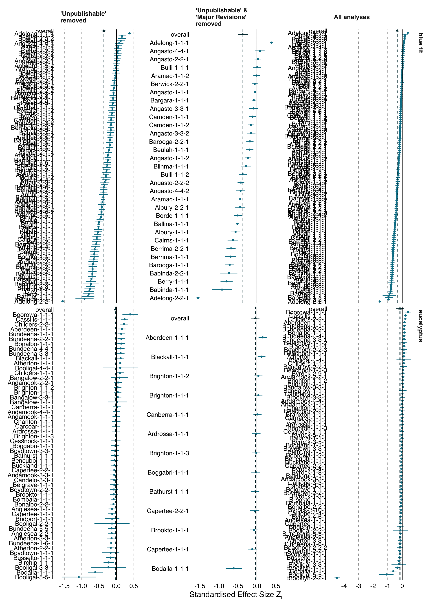

As described in the summary statistics section of the manuscript, 63 teams submitted 132 \(Z_r\) model estimates and 43 teams submitted 65 out of sample predictions for the blue tit dataset. Similarly, 40 submitted 79 \(Z_r\) model estimates and 14 teams submitted 24 out of sample predictions for the Eucalytpus dataset. The majority of the blue tit analyses specified normal error distributions and were non-Bayesian mixed effects models. Analyses of the Eucalyptus dataset rarely specified normal error distributions, likely because the response variable was in the form of counts. Mixed effects models were also common for Eucalytpus analyses (Table A.1).
Table A.1: Summary of the number of anaysis teams, total analyses, models with normal error distributions, mixed effects models, and models developed with Bayesian statistical methods for effect size analyses only (\(Z_r\)) and out-of-sample prediction only (\(y_i\)).
No. Analyses
No. Teams
Normal Distribution
Mixed Effect
Bayesian
blue tit
$$Z_r$$
132
63
125
129
10
$$y_i$$
65
43
60
64
10
Eucalyptus
$$Z_r$$
79
40
15
62
5
$$y_i$$
24
14
1
16
3
A.1.2 Model composition
The composition of models varied substantially (Table A.2) in regards to the number of fixed and random effects, interaction terms and the number of data points used. For the blue tit dataset, models used up to 19 fixed effects, 12 random effects, and 10 interaction terms and had sample sizes ranging from 76 to 3720 For the Eucalyptus dataset models had up to 13 fixed effects, 4 random effects, 5 interaction terms and sample sizes ranging from 18 to 351.
Table A.2: Mean, standard deviation and range of number of fixed and random variables and interaction terms used in models and sample size used. Repeated for effect size analyses only (\(Z_r\)) and out-of-sample prediction only (\(y_i\)).
mean
SD
min
max
Blue tit
Eucalyptus
Blue tit
Eucalyptus
Blue tit
Eucalyptus
Blue tit
Eucalyptus
fixed
$$Z_r$$
5.20
5.01
2.92
3.83
1
1
19
13
$$y_i$$
4.78
4.67
2.35
3.45
1
1
10
13
interactions
$$Z_r$$
4.40 101
1.60 101
1.11
6.50 101
0
0
10
5
$$y_i$$
2.80 101
1.70 101
6.30 101
4.80 101
0
0
3
2
random
$$Z_r$$
3.53
1.41
2.08
1.09
0
0
10
4
$$y_i$$
4.42
9.60 101
2.78
8.10 101
1
0
12
3
samplesize
$$Z_r$$
2.62 103
2.98 102
9.39 102
1.06 102
76
18
3720
351
$$y_i$$
2.84 103
3.26 102
7.76 102
6.42 101
396
90
3720
350
A.1.3 Choice of variables
The choice of variables also differed substantially among models (Table A.3). Considering all submitted analyses, the blue tit dataset had 52 candidate variables, which were used in a mean of 20.58 \(Z_r\) analyses (range 0- 101), the Eucalyptus dataset had 58 candidate variables which were used in a mean of 9.07 \(Z_r\) analyses (range 0-55).
Code
#table 3 - summary of mean, sd and range for the number of analyses in which each variable was usedTable3 %>%rename(SD = sd) %>%pivot_wider(names_from = dataset,names_sep =".",values_from =c(mean, SD, min, max) ) %>% ungroup %>% gt::gt(rowname_col ="subset") %>% gt::tab_spanner_delim(delim =".") %>% gt::fmt_scientific(columns =c(contains("mean"), contains("SD")),decimals =2) %>% gt::cols_label_with(fn = Hmisc::capitalize) %>% gt::cols_label_with(c(contains("Eucalyptus")), fn =~ gt::md(paste0("*",.x, "*"))) %>% gt::sub_values(columns = subset, values =c("effects"), replacement = gt::md("$$Z_r$$")) %>% gt::sub_values(columns = subset, values =c("predictions"), replacement = gt::md("$$y_i$$")) %>% gt::sub_values(columns = subset, values =c("all"), replacement = gt::md("All analyses")) %>% gt::opt_stylize(style =6, color ="gray") %>%tab_style(style =cell_text(transform ="capitalize"),locations =cells_column_spanners() )
Table A.3: Mean, SD, minimum and maximum number of analyses in which each variable was used, for effect size analyses only (\(Z_r\)), out-of-sample prediction only (\(y_i\)), using the full dataset.
mean
SD
min
max
Blue tit
Eucalyptus
Blue tit
Eucalyptus
Blue tit
Eucalyptus
Blue tit
Eucalyptus
$$Z_r$$
2.06 101
9.07
2.71 101
1.23 101
0
0
101
55
$$y_i$$
1.09 101
2.31
1.41 101
3.88
0
0
54
17
A.2 Effect Size Specification Analysis
We used a specification curve (Simonsohn, Simmons, and Nelson 2015) to look for relationships between \(Z_r\) values and several modeling decisions, including the choice of independent and dependent variable, transformation of the dependent variable, and other features of the models that produced those \(Z_r\) values (Figure A.1, Figure A.2). Each effect can be matched to the model features that produced it by following a vertical line down the figure.
A.2.1 Blue tit
We observed few clear trends in the blue tit specification curve (Figure A.1). The clearest trend was for the independent variable contrast: reduced broods vs. unmanipulated broods to produce weak or even positive relationships, but never strongly negative relationships. The biological interpretation of this pattern is that nestlings in reduced broods averaged similar growth to nestlings in unmanipulated broods, and sometimes the nestlings in reduced broods even grew less than the nestlings in unmanipulated broods. Therefore, it may be that competition limits nestling growth primarily when the number of nestlings exceeds the clutch size produced by the parents, and not in unmanipulated broods. The other relatively clear trend was that the strongest negative relationships were never based on the independent variable contrast: unmanipulated broods vs. enlarged broods. These observations demonstrate the potential value of specification curves.
Figure A.1: A. Forest plot for blue tit analyses: standardized effect-sizes (circles) and their 95% confidence intervals are displayed for each analysis included in the meta-analysis model. The meta-analytic mean effect-size is denoted by a black diamond, with error bars also representing the 95% confidence interval. The dashed black line demarcates effect sizes of 0, whereby no effect of the test variable on the response variable is found. Blue points where Zr and its associated confidence intervals are greater than 0 indicate analyses that found a negative effect of sibling number on nestling growth. Gray coloured points have confidence intervals crossing 0, indicating no relationship between the test and response variable. Red points indicate the analysis found a positive relationship between sibling number and nestling growth. B. Analysis specification plot: for each analysis plotted in A, the corresponding combination of analysis decisions is plotted. Each decision and its alternative choices is grouped into its own facet, with the decision point described on the right of the panel, and the option shown on the left. Lines indicate the option chosen used in the corresponding point in plot A. C. Sample sizes of each analysis. Note that empty bars indicate analyst did not report sample size and sample size could not be derived by lead team.
A.2.2Eucalyptus
In the Eucalyptus specification curve, there are no strong trends (Figure A.2). It is, perhaps, the case that choosing the dependent variable count of seedlings 0-0.5m high corresponds to more positive results and choosing count of all Eucalytpus seedlings might find more negative results. Choosing the independent variable sum of all grass types (with or without non-grass graminoids) might be associated with more results close to zero consistent with the absence of an effect.
Figure A.2: A. Forest plot for Eucalyptus analyses: standardized effect-sizes (circles) and their 95% confidence intervals are displayed for each analysis included in the meta-analysis model. The meta-analytic mean effect-size is denoted by a black diamond, with error bars also representing the 95% confidence interval. The dashed black line demarcates effect sizes of 0, whereby no effect of the test variable on the response variable is found. Blue points where \(Z_r\) and its associated confidence intervals are greater than 0 indicate analyses that found a positive relationship of grass cover on Eucalyptus seedling success. Gray coloured points have confidence intervals crossing 0, indicating no relationship between the test and response variable. Red points indicate the analysis found a negative relationship between grass cover and Eucalyptus seedling success. B. Analysis specification plot: for each analysis plotted in A, the corresponding combination of analysis decisions is plotted. Each decision and its alternative choices is grouped into its own facet, with the decision point described on the right of the panel, and the option shown on the left. Lines indicate the option chosen used in the corresponding point in plot A. C. Sample sizes of each analysis. Note that empty bars indicate analyst did not report sample size and sample size could not be derived by lead team.
A.2.3 Post-hoc analysis: Exploring the effect of removing analyses with poor peer-review ratings on heterogeneity
The forest plots in Figure B.3 compare the distributions of \(Z_r\) effects from our full set of analyses with the distributions of \(Z_r\) effects from our post-hoc analyses which removed either analyses that were reviewed at least once as being unpublishable or analyses that were reviewed at least once as being unpublishable or requiring major revisions. Removing these analyses from the blue tit data had little impact on the overall distribution of the results. For the Eucalytpus analyses, removing unpublishable analyses meant dropping the extreme outlier Brooklyn-2-2-1 which made a substantial difference to the amount of observerd deviation from the meta-analytic mean.

Figure A.3: Forest plots of meta-analytic estimated standardized effect sizes (\(Z_r\), blue circles) and their 95% confidence intervals for each effect size included in the meta-analysis model. The meta-analytic mean effect size is denoted by a black triangle and a dashed vertical line, with error bars also representing the 95% confidence interval. The solid black vertical line demarcates effect size of 0, indicating no relationship between the test variable and the response variable. The left side of each panel shows the analysis team names (anonymous arbitrary names assigned by us), each followed by three numbers. The first number is the submission ID (some analyst teams submitted results to us on >1 submission form), the second number is the analysis ID (some analyst teams included results of >1 analysis in a given submission), and the third number is the effect ID (some analysts submitted values for >1 effect per analysis). Thus, each row in each forest plot is uniquely identified, but it is possible to determine which effects come from which analyses and which analysis teams. The plots in the top row depict effects from analyses of blue tit data, and the bottom row plots depict effects from analyses of Eucalyptus data. The right-most plots depict all usable effect sizes. The plots on the left side exclude effects from analysis sets that received at least one rating of unpublishable from peer reviewers, and the plots in the middle exclude effects from analysis sets that received at least one rating of either unpublishable or major revision from peer reviewers.
Simonsohn, Uri, Joseph P. Simmons, and Leif D. Nelson. 2015. Specification Curve: Descriptive and Inferential Statistics on All Reasonable Specifications. Manuscript. SSRN Electronic Journal. https://doi.org/10.2139/ssrn.2694998 .